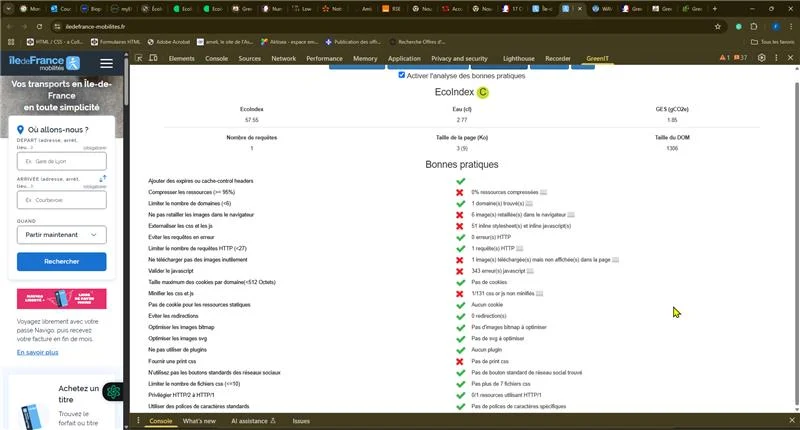
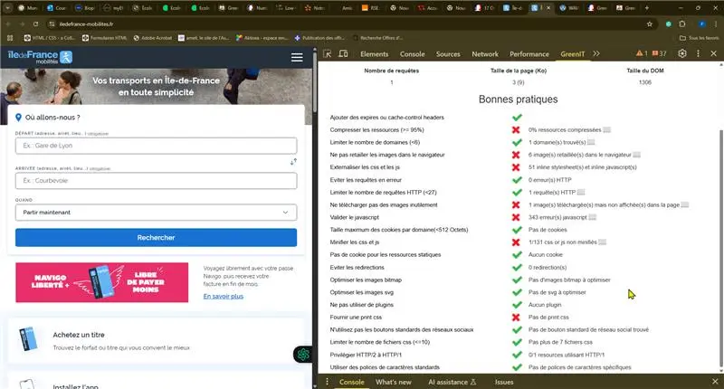
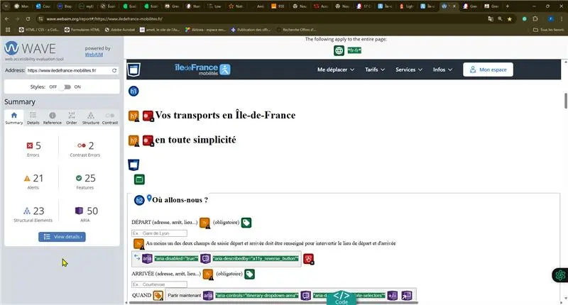

Présentation du service et son utilité
La fonctionnalité "Trajet" du site Île-de-France Mobilités permet aux usagers de planifier un déplacement en transports en commun en Île-de-France. Elle fournit les itinéraires, horaires et alternatives disponibles en fonction de la localisation, de la date et de l'heure.
En offrant un outil accessible de planification des transports en commun, ce service contribue directement à réduire la dépendance à la voiture individuelle, favorisant ainsi une mobilité durable.
ODD associés :
- Objectif 11 – Villes et communautés durables (en facilitant une mobilité urbaine efficace)
- Objectif 13 – Mesures relatives à la lutte contre les changements climatiques (en encourageant l'utilisation de modes de transport à faible émission de carbone)
La conception responsable, incluant l'écoconception, l'accessibilité, l'éthique et le respect de la vie privée, considère l'ensemble du cycle de vie d'un service numérique, depuis sa conception jusqu'à sa mise hors service. Elle concerne également les trois niveaux principaux : le matériel (terminaux utilisateurs), les logiciels, et l'infrastructure (réseau et centres de données).
Analyse de la fonctionnalité "Faire un trajet"
La fonctionnalité "Faire un trajet" du site Île-de-France Mobilités est au cœur de l’expérience utilisateur. Elle permet une recherche rapide d’itinéraire avec plusieurs options (rapide, moins de marche, accessible PMR, etc.).
Elle mobilise plusieurs ressources (API, cartes interactives, résultats dynamiques) qui, si elles ne sont pas optimisées, peuvent impacter la performance, l'accessibilité et l’empreinte carbone.
Son évaluation à travers des outils comme Lighthouse, Ecoindex, GreenIT et WAVE a permis d’identifier à la fois les forces (navigation claire, lazy loading, responsive design) et les pistes d’amélioration (poids des ressources, structure sémantique, accessibilité renforcée).
Audit de conception responsable
Performance et Écoconception (Pilier Environnemental)
- Score EcoIndex : 61/100 (Grade C) - indicateur de la performance environnementale de la page web
- Métriques techniques : 39 requêtes HTTP, poids total de 917 Ko, DOM de 1506 éléments
Points forts
- Utilisation correcte du protocole HTTP/2, conçu pour améliorer les performances web
- Absence de vidéos superflues et de polices externes
- Design responsive (mobile first)
- Core Web Vitals généralement bons :
- Largest Contentful Paint (LCP) : 1,4s (desktop), 1,7s (mobile)
- Interaction to Next Paint (INP) : 80ms (desktop), 84ms (mobile)
- Cumulative Layout Shift (CLS) : 0,01
- First Contentful Paint (FCP) : 1,1s (desktop), 1,4s (mobile)
- Time to First Byte (TTFB) : 0,4s (desktop), 0,5s (mobile)
- URL lisibles et sans accents
- Navigation cohérente avec utilisation d'ancres
Points à améliorer
- Certaines ressources non compressées, augmentant le volume de transfert
- Trop de requêtes lors de la navigation (39 requêtes HTTP)
- 13 images sur 31 non optimisées
- 3 scripts inutiles identifiés
- Présence de styles en ligne dans certains éléments
- Police non spécifiquement adaptée à la lecture écran
- Images redimensionnées à la volée plutôt que pré-traitées
- Structure HTML : sauts de titres non cohérents
- Zoom parfois désactivé sur mobile
Accessibilité (Pilier Social)
- Score d'accessibilité Lighthouse : 61/100 (significativement inférieur à l'objectif recommandé de 90/100)
Points forts
- Structure générale du site claire
- Navigation au clavier possible sur les éléments principaux
- Contraste globalement suffisant
Points à améliorer
- Éléments dynamiques (calendrier, filtres, carte interactive) peu accessibles aux lecteurs d'écran
- Manque d'alternatives textuelles pour certains visuels
- Contenu vidéo sans sous-titres
- Structure HTML : hiérarchie des titres non cohérente
Qualité Web et Expérience Utilisateur (Piliers Économique & Social)
- Parcours utilisateur pour la recherche d'itinéraire simple et rapide
- Informations fournies (itinéraires, horaires) à jour et riches
- Temps de chargement généralement bons, mais la page d'accueil souffre de trop nombreuses requêtes HTTP et d'images non optimisées
Recommandations
Recommandations d'écoconception
- Optimiser les images : implémenter des techniques de compression et utiliser des formats d'image modernes comme WebP
- Réduire le nombre de requêtes : consolider les scripts et feuilles de style, supprimer les 3 scripts inutiles identifiés
- Améliorer la compression des ressources : activer la compression GZIP ou Brotli pour toutes les ressources statiques
- Limiter la taille du DOM : simplifier la structure HTML pour améliorer les performances de rendu
- Supprimer les styles en ligne et consolider le CSS dans un fichier unique minifié
- Suivre et afficher publiquement les scores EcoIndex et PageSpeed sur le site
Recommandations d'accessibilité
- Revoir la hiérarchie des titres pour respecter la logique
<h1><h2><h3> - S'assurer que tous les éléments interactifs sont pleinement accessibles, notamment les composants dynamiques complexes
- Ajouter des alternatives textuelles pour toutes les images significatives
- Fournir des sous-titres ou des transcriptions pour tout contenu vidéo
- Adapter la typographie pour améliorer la lisibilité (sans empattement)
- Réactiver le zoom utilisateur sur mobile pour une meilleure accessibilité
- Mener des tests avec des utilisateurs ayant divers handicaps pour recueillir des retours directs
Recommandations de gestion du cycle de vie et des données
- Mettre en œuvre une politique claire de gestion et de suppression des données personnelles conformément au RGPD
- Documenter la politique de maintenance et de sécurité du service
Indicateurs à suivre
| Indicateur | Valeur actuelle | Objectif recommandé |
|---|---|---|
| Score EcoIndex | 61/100 (C) | >70 (B ou A) |
| Score d'accessibilité | 61/100 | >90/100 |
| Score de performance | 82/100 | >90/100 |
| Nombre de requêtes HTTP | 39 | <25 |
| Taille de la page d'accueil | 917 Ko | <800 Ko |
| Taille du DOM | 1506 | <1400 |
Répartition des impacts
L'audit suggère que, en ordre de grandeur général, les impacts environnementaux du service numérique sont répartis comme suit :
- 70% sont liés aux terminaux utilisateurs. Cela concorde avec les conclusions indiquant que la phase de fabrication des équipements numériques représente une part significative des impacts environnementaux globaux.
- 20% sont liés à l'hébergement (centres de données).
- 10% sont liés à l'infrastructure réseau.
Cette répartition souligne que, bien que l'optimisation de l'hébergement et du réseau soit importante, les efforts pour réduire le besoin de renouvellement fréquent des terminaux et minimiser le traitement côté client sont essentiels pour réduire l'impact global.
Résultat de l'audit Lighthouse

Scores PageSpeed Insights (Desktop) :
- Performance : 82/100
- Accessibilité : 61/100
- Bonnes pratiques : 78/100
- SEO : 92/100
Résultat de l'audit GreenIT

Score EcoIndex : 61/100 (Grade C)
Métriques techniques :
- 39 requêtes HTTP
- Poids total : 917 Ko
- DOM : 1506 éléments
Résultat de l’audit WAVE

Informations complémentaires
Le service de recherche d'itinéraire d'Île-de-France Mobilités repose sur une base technique solide et apporte une utilité significative en promouvant les transports en commun durables. Cependant, l'audit met en évidence des opportunités claires d'amélioration de sa conception responsable.
Les principaux axes d'amélioration concernent l'écoconception (optimisation des images, réduction du nombre de requêtes HTTP, gestion de la complexité du DOM) et l'accessibilité (notamment pour les éléments dynamiques et l'ajout d'alternatives textuelles et de sous-titres). De plus, la mise en œuvre de politiques transparentes de gestion des données personnelles est essentielle pour répondre aux aspects sociaux et éthiques de la conception responsable.
La mise en œuvre des actions recommandées permettrait non seulement de réduire l'empreinte environnementale du service et d'améliorer son inclusivité, mais aussi d'améliorer la qualité web globale et l'expérience utilisateur. La responsabilité de l'impact numérique repose en définitive sur ceux qui conçoivent et utilisent les services numériques.
Outils utilisés : Lighthouse, Ecoindex, Web.dev measure, PageSpeed Insights